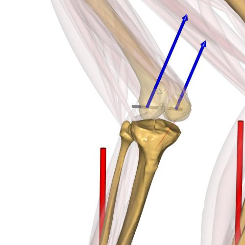

Knee forces example¶
Example of calculating the medial/lateral knee force from the total force and moment.
Most musculoskeletal models uses a simplified knee joint (revolute joint). But we can still estimate what the medial and lateral femoral condyle contact forces are on the tibial plateau.
{kind=link}
Note
The medial and lateral knee forces calculated here are only crude estimate for the actual knee condyle contact force.
This example shows how to find the knee reaction forces and moments and decompose them into two equivalent forces which represent the medial and lateral knee force components acting from the femur to the tibial tray.
{kind=link}
The vertical knee force with regards to the shank and the knee moment in the shank frontal plane is decomposed into a lateral and medial force component. These forces can be thought as a representation of the knee condyle forces on the tibial plateau.
The figure above shows the concept. The relationship between the forces and moment can be expressed as:
From the above equations we can find the medial and lateral knee forces:
The model shows how this can be added to any model and walks through the AnyScript code.
